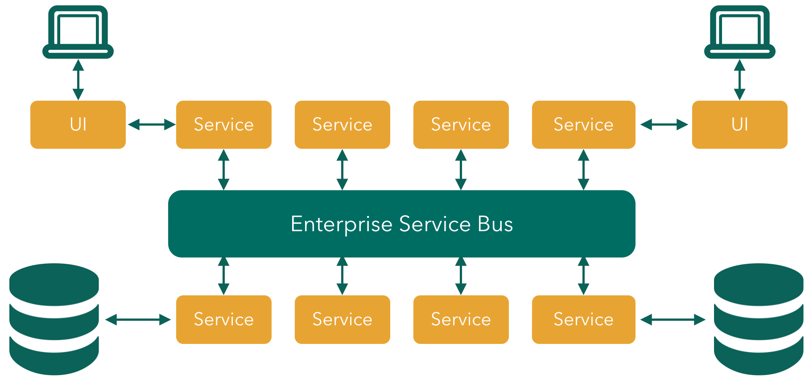

Cloud Native Application Architecture
Dave Syer, 2015Does This Sound Good?
- Speed
- Safety
- Scale
- Mobility
Not Monoliths…
Not Traditional (ESB-centric) SOA…

But Microservices!
Loosely coupled service oriented architecture with bounded contexts…
@adrianco
If every service has to be updated in concert, it’s not loosely coupled.
If you have to know about the internals of surrounding services you don’t have a bounded context.
Process

- Deliver (Day One)
- Continuously (Day Two and Beyond)
Sociology

Some Practical Advice
Paraphrasing @adrianco:
Get out of the business of infrastructure and
automation (a.k.a. "undifferentiated heavy lifting")
- Internet giants, ratio of app to infra developers = 10:1
- Your business (= your apps) is special, your infrastructure is not
- Don’t try to differentiate on something that is a commodity
You’re Going to Need a Platform
Platform features:
| Infrastructure | Application |
|---|---|
Environment Provisioning |
Distributed/Versioned Config |
On-Demand/Automatic Scaling |
Service Registration/Discovery |
Failover Resilience |
Routing/Load Balancing |
Routing/Load Balancing |
Service Integration |
Data Service Operations |
Fault Tolerance |
Monitoring |
Asynchronous Messaging |
Anatomy of a Cloud Platform

What is Cloud Native?
If you make the rule that you own the code that you write, you soon get to know what #cloudnative means!
@david_syer
Links
/